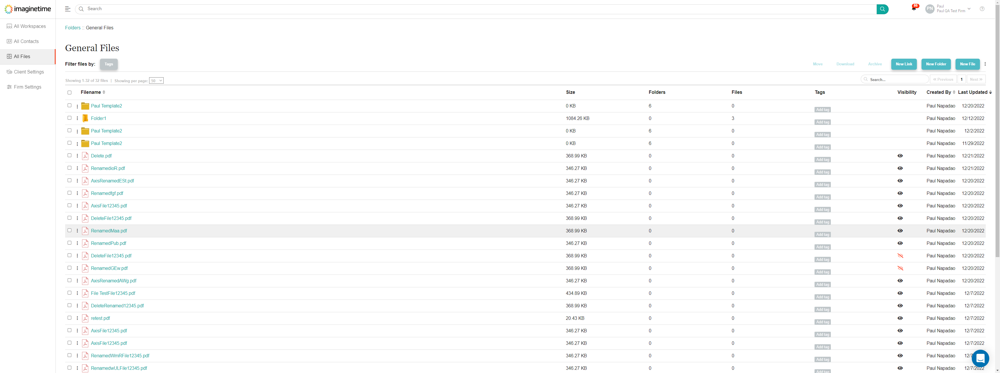
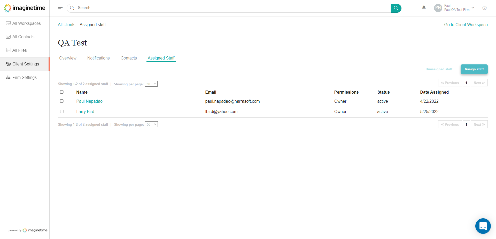
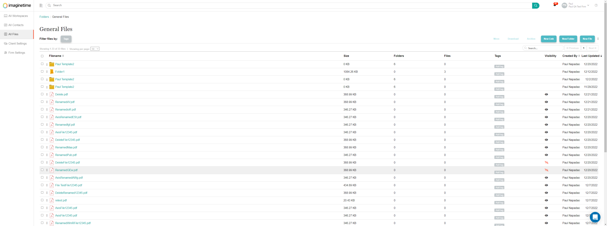
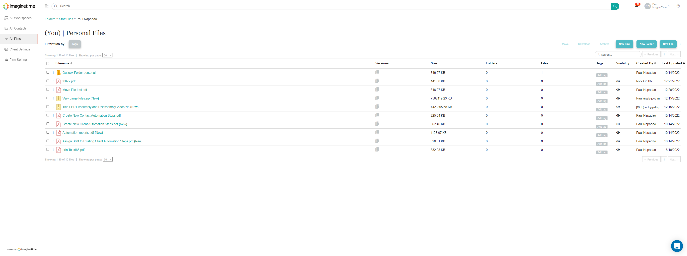
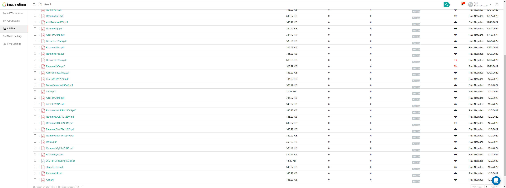
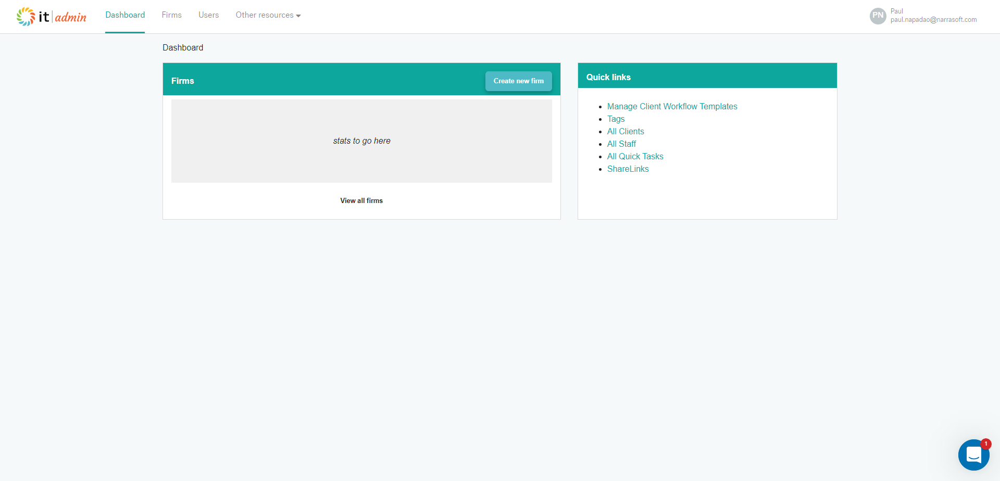
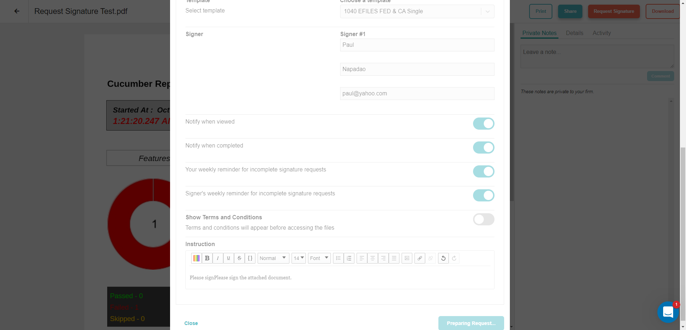
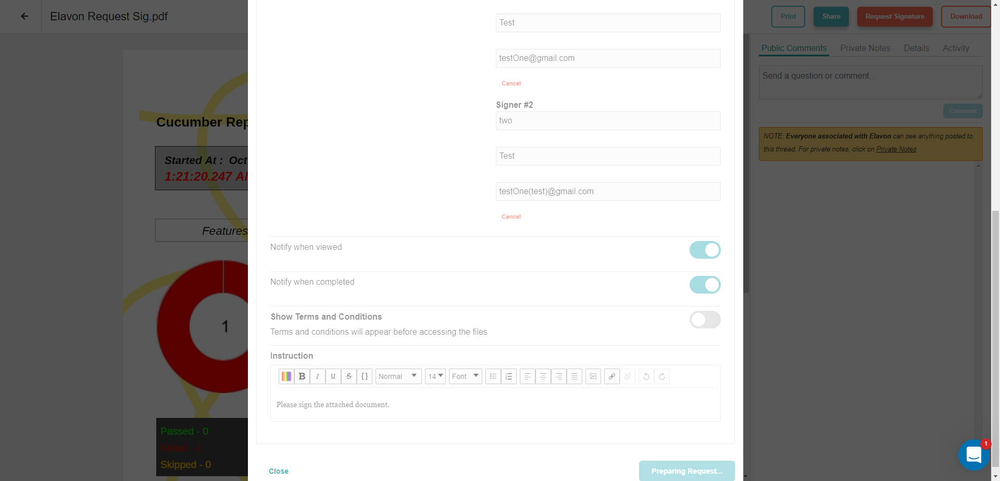
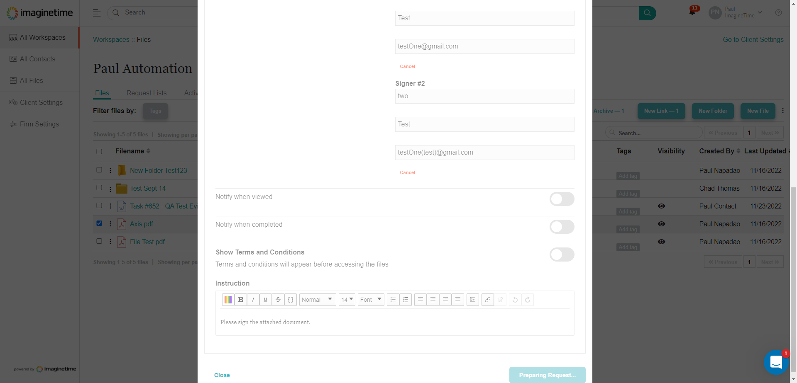

Started
Dec 2, 2022 08:15:46 PM
Ended
Dec 2, 2022 08:56:00 PM
Features Passed
16
Features Failed
7
Features
Scenarios
Steps
Timeline
Tags
| Name | Passed | Failed | Skipped | Others | Passed % |
|---|---|---|---|---|---|
| @login | 1 | 0 | 0 | 0 | 100% |
| @skip | 0 | 0 | 1 | 0 | 0% |
| @test2 | 14 | 2 | 1 | 0 | 82.353% |
| @test5 | 4 | 1 | 0 | 0 | 80% |
| @test6 | 1 | 0 | 0 | 0 | 100% |
| @test1 | 18 | 1 | 0 | 0 | 94.737% |
| @test7 | 1 | 0 | 0 | 0 | 100% |
| @test4 | 8 | 2 | 0 | 0 | 80% |
| @test3 | 10 | 4 | 0 | 0 | 71.429% |
System/Environment
| Name | Value |
|---|---|
| AppName | AutomationProject |
| user | Paul Napadao |
| build | 1.1 |
| os | Windows |
-
Add New Client Feature
20:15:47 PM / 00:02:50:256 Pass
Add New Client Feature
12.02.2022 20:15:47 12.02.2022 20:18:37 00:02:50:256 · #test-id=1PassAdd New ClientGiven User has already logged in to Imagine TimeEmail Address Password paul.napadao@narrasoft.com Pnnwfh2021! When User gets the title of the pageThen Title page should be "Select Your Account"And User Select a firm "Paul QA Test Firm"Then Profile firm should be "Paul QA Test Firm"Given User is on Client Settings pageWhen User clicks new client buttonAnd Clicks Create new clientThen A modal should be displayed with header message "New client"When User enters client informationName Client Identifier Assign Staff Engagement Types Thomas Shelby Peaky Blinders Paul Napadao 1040 And Click NextThen Staff Notification should be displayedUpload a file View a file you uploaded Download a file you uploaded Comment on a file Complete a signature request View a signature request Send a message And Client should be added on the client listAnd Clients Overview should be correctPassDelete a ClientGiven User has already logged in to Imagine TimeEmail Address Password paul.napadao@narrasoft.com Pnnwfh2021! When User gets the title of the pageThen Title page should be "Select Your Account"And User Select a firm "Paul QA Test Firm"Then Profile firm should be "Paul QA Test Firm"Given User is on Client Settings pageWhen User Selects a Client "Thomas Shelby"And Click ArchiveThen Selected Client should be on the archive listWhen User Selects a client in the archive listAnd Click DeleteThen Client Should be deletedPassCheck User Profile DropdownGiven User has already logged in to Imagine TimeEmail Address Password paul.napadao@narrasoft.com Pnnwfh2021! Given User is on Admin PageAnd Clicks user profile dropdownThen Dropdown menu should be correct -
Add New Contact
20:16:47 PM / 00:01:07:755 Pass
Add New Contact
12.02.2022 20:16:47 12.02.2022 20:17:55 00:01:07:755 · #test-id=38PassAdd New Contact and delete new contactGiven User has already logged in to Imagine TimeEmail Address Password paul.napadao@narrasoft.com Pnnwfh2021! When User gets the title of the pageThen Title page should be "Select Your Account"And User Select a firm "Paul QA Test Firm"Then Profile firm should be "Paul QA Test Firm"Given User is on Client Settings Overview "Steph Curry"When User is on "Contacts" tabAnd Click Add contacts buttonThen A modal should be displayed with header message "Invite client users to Steph Curry"When User fill up add contact formEmail Address Full Name Personal Note jj@gmail.com Janver Jacinto Add Contact Test And User send an invitation to contactsThen Contact should be added on client contacts listWhen User delete the contactThen Contact should be deletedPassChoose From Existing contact and remove contact from clientGiven User has already logged in to Imagine TimeEmail Address Password paul.napadao@narrasoft.com Pnnwfh2021! When User gets the title of the pageThen Title page should be "Select Your Account"And User Select a firm "Paul QA Test Firm"Then Profile firm should be "Paul QA Test Firm"Given User is on Client Settings Overview "Lebron James"When User is on "Contacts" tabAnd Click Add contacts buttonWhen User click choose from existing contactAnd Select "Test contact" from the contact listAnd User send an invitation to contactsWhen User click remove from clientThen "No client contacts" text should be displayed -
Add New Tag
20:17:55 PM / 00:00:27:693 Pass
Add New Tag
12.02.2022 20:17:55 12.02.2022 20:18:22 00:00:27:693 · #test-id=76PassAdd New TagPassAdd New TagGiven User has already logged in to Imagine TimeEmail Address Password paul.napadao@narrasoft.com Pnnwfh2021! When User gets the title of the pageThen Title page should be "Select Your Account"And User Select a firm "ImagineTime"Then Profile firm should be "ImagineTime"Given User is on Firm Settings pageWhen User is on "Custom Tags" tabAnd Click new tag buttonThen A modal should be displayed with header message "New custom tag"When User enter a name "QA Test"When Select a type "Other"And Click create custom tag buttonThen The new tag should be added on the custom tags list -
All Workspaces page feature
20:18:37 PM / 00:00:21:423 Pass
All Workspaces page feature
12.02.2022 20:18:37 12.02.2022 20:18:59 00:00:21:423 · #test-id=105PassSide bar linksGiven User has already logged in to Imagine TimeEmail Address Password paul.napadao@narrasoft.com Pnnwfh2021! When User gets the title of the pageThen Title page should be "Select Your Account"And User Select a firm "ImagineTime"Then Profile firm should be "ImagineTime"Given User is on All Client Workspaces pageWhen User gets the side bar links listsAll Workspaces All Contacts All Files Client Settings Firm Settings And Links count shoud be 5 -
Assign Staff
20:18:59 PM / 00:01:52:574 Pass
Assign Staff
12.02.2022 20:18:59 12.02.2022 20:20:51 00:01:52:574 · #test-id=119PassCheck notification when Assigning a StaffGiven User has already logged in to Imagine TimeEmail Address Password paul.napadao@narrasoft.com Pnnwfh2021! When User gets the title of the pageThen Title page should be "Select Your Account"And User Select a firm "Paul QA Test Firm"Then Profile firm should be "Paul QA Test Firm"Given User is on Client Settings pageWhen User Selects a client "Lebron James"Then Tool Bar buttons should enabledWhen User click Assign Staff buttonThen A modal should be displayed with header message "Assign staff"When User Select a Staff "Larry Bird"And Click next buttonThen Assigned staff notification settings should be displayedUpload a file View a file you uploaded Download a file you uploaded Comment on a file Complete a signature request View a signature request Send a message When Click Assign Staff buttonThen Staff should exist on Clients Assinged Staff listPassAssign then UnAssign a StaffGiven User has already logged in to Imagine TimeEmail Address Password paul.napadao@narrasoft.com Pnnwfh2021! When User gets the title of the pageThen Title page should be "Select Your Account"And User Select a firm "Paul QA Test Firm"Then Profile firm should be "Paul QA Test Firm"Given User is on Client Settings pageWhen User Clicks a client "QA Test"And Assign a staff "Michael Jordan"Then Assined staffs should be dispalyedPaul Napadao Larry Bird Michael Jordan When User unassign a staff "Michael Jordan"Then Staff should be removed from the listPaul Napadao Larry Bird PassAssign Multiple Staff then UnassignGiven User has already logged in to Imagine TimeEmail Address Password paul.napadao@narrasoft.com Pnnwfh2021! When User gets the title of the pageThen Title page should be "Select Your Account"And User Select a firm "Paul QA Test Firm"Then Profile firm should be "Paul QA Test Firm"Given User is on Client Settings pageWhen User Selects a client "Lebron James"And User assign multiple staffsStaff1 Staff2 Paul Napadao Michael Jordan Then Staffs should be assigned to clientPaul Napadao Michael Jordan When User select all assigned staffsAnd Click Unassigned staffThen Message should be displayed "No staff assigned to this client"PassCheck Assigned staff counts if correctGiven User has already logged in to Imagine TimeEmail Address Password paul.napadao@narrasoft.com Pnnwfh2021! When User gets the title of the pageThen Title page should be "Select Your Account"And User Select a firm "Paul QA Test Firm"Then Profile firm should be "Paul QA Test Firm"Given User is on Client Settings pageWhen User get assigned staff count for "QA Test"And Get total number of assigned staffsThen Assign Staff counts should be correct -
Notification Feature
20:20:51 PM / 00:00:26:039 Pass
Notification Feature
12.02.2022 20:20:51 12.02.2022 20:21:17 00:00:26:039 · #test-id=187PassCheck Notification SettingsGiven User has already logged in to Imagine TimeEmail Address Password paul.napadao@narrasoft.com Pnnwfh2021! When User gets the title of the pageThen Title page should be "Select Your Account"And User Select a firm "ImagineTime"Then Profile firm should be "ImagineTime"Given User is on Client Settings Overview "Elavon"And User is on "Notifications" tabThen Notification settings should be displayedUpload a file View a file they uploaded Download a file they uploaded Comment on a file Send a message Upload a file View a file you uploaded Download a file you uploaded Comment on a file Complete a signature request View a signature request Send a message -
Clients Portal
20:21:17 PM / 00:02:05:103 Pass
Clients Portal
12.02.2022 20:21:17 12.02.2022 20:23:22 00:02:05:103 · #test-id=201PassCheck LinksGiven User has already logged in to Imagine TimeEmail Address Password paulnapadaotest@gmail.com Pnnwfh2021! When User gets the title of the pageThen Title page should be "Select Your Account"And User Select a firm "Paul Automation"Then Profile firm should be "Paul Automation"Given User has logged in successfullyThen Navigation Links should be displayedFiles Dashboard Quick Tasks Request Lists Request List Tasks Message Board Account PassCheck files if displayedGiven User has already logged in to Imagine TimeEmail Address Password paulnapadaotest@gmail.com Pnnwfh2021! When User gets the title of the pageThen Title page should be "Select Your Account"And User Select a firm "Paul Automation"Then Profile firm should be "Paul Automation"Given User is on "Files" tabThen Files and folders should displayedNew Folder Test123 Test Sept 14 Axis.pdf File Test.pdf PassDownload a folder on Clients portalGiven User has already logged in to Imagine TimeEmail Address Password paulnapadaotest@gmail.com Pnnwfh2021! When User gets the title of the pageThen Title page should be "Select Your Account"And User Select a firm "Paul Automation"Then Profile firm should be "Paul Automation"Given User is on "Files" tabWhen User download "New Folder Test123" folderThen folder should be downloaded as zip filePassDownload multiple files on Clients PortalGiven User has already logged in to Imagine TimeEmail Address Password paulnapadaotest@gmail.com Pnnwfh2021! When User gets the title of the pageThen Title page should be "Select Your Account"And User Select a firm "Paul Automation"Then Profile firm should be "Paul Automation"Given User is on "Files" tabWhen User tick all checkboxAnd Click download buttonThen Files should be downloaded as zip filePassCheck the latest message if postedGiven User has already logged in to Imagine TimeEmail Address Password paulnapadaotest@gmail.com Pnnwfh2021! When User gets the title of the pageThen Title page should be "Select Your Account"And User Select a firm "Paul Automation"Then Profile firm should be "Paul Automation"Given User has sent a message in Clients portalEmail Address Password Subject Message paulnapadaotest@gmail.com Pnnwfh2021! Test Automation3 This is a message test3 When User has already logged in to Imagine TimeEmail Address Password paul.napadao@narrasoft.com Pnnwfh2021! And User Select a firm "ImagineTime"Then Profile firm should be "ImagineTime"When User navigates to clients workspace with a Client Name "Paul Automation"And User is on "Activity" tabThen the latest activity should be todayAnd "Paul Contact sent a message" message should be displayedWhen User is on "Message" tabThen Latest Message sent from client portal should be displayed -
Delete Feature
20:23:22 PM / 00:02:12:650 Pass
Delete Feature
12.02.2022 20:23:22 12.02.2022 20:25:35 00:02:12:650 · #test-id=273PassDelete a file in General FilesGiven User has already logged in to Imagine TimeEmail Address Password paul.napadao@narrasoft.com Pnnwfh2021! When User gets the title of the pageThen Title page should be "Select Your Account"And User Select a firm "Paul QA Test Firm"Then Profile firm should be "Paul QA Test Firm"Given User Uploaded a file in General Files "Delete.pdf"When User Selects the uploaded fileAnd Click ArchiveThen File should be moved to arhived files listAnd Title page should be "Archived Files List"When User Selects a file in archived files listAnd Click DeleteThen File should be deletedPassDelete a file in Clients WorkspacePassDelete a file in Clients WorkspaceGiven User has already logged in to Imagine TimeEmail Address Password paul.napadao@narrasoft.com Pnnwfh2021! When User gets the title of the pageThen Title page should be "Select Your Account"And User Select a firm "Paul QA Test Firm"Then Profile firm should be "Paul QA Test Firm"Given User Uploaded a file "Delete.pdf" in Client Workspace "Avalon Systems"When User Selects the uploaded fileAnd Click ArchiveThen File should be moved to arhived files listAnd Title page should be "Archived Files List"When User Selects a file in archived files listAnd Click DeleteThen File should be deletedPassDelete a folderPassDelete a folderGiven User has already logged in to Imagine TimeEmail Address Password paul.napadao@narrasoft.com Pnnwfh2021! When User gets the title of the pageThen Title page should be "Select Your Account"And User Select a firm "Paul QA Test Firm"Then Profile firm should be "Paul QA Test Firm"Given User is created a folder "newDeleteFolder1" on Client Workspace "Lebron James"When User selects a folderAnd Click ArchiveThen File should be moved to arhived files listAnd Title page should be "Archived Files List"When User Selects a file in archived files listAnd Click DeleteThen File should be deleted -
Download files
20:25:35 PM / 00:01:23:679 Fail
Download files
12.02.2022 20:25:35 12.02.2022 20:26:59 00:01:23:679 · #test-id=330PassDownload a fileGiven User has already logged in to Imagine TimeEmail Address Password paul.napadao@narrasoft.com Pnnwfh2021! When User gets the title of the pageThen Title page should be "Select Your Account"And User Select a firm "Paul QA Test Firm"Then Profile firm should be "Paul QA Test Firm"Given User is on All Client Workspaces pageWhen User search "Automation test file.pdf"And Select the expected fileThen File name should be correctWhen User click download buttonThen File should be downloadedFaildownload a folder from a clientGiven User has already logged in to Imagine TimeEmail Address Password paul.napadao@narrasoft.com Pnnwfh2021! When User gets the title of the pageThen Title page should be "Select Your Account"And User Select a firm "Paul QA Test Firm"Then Profile firm should be "Paul QA Test Firm"Given User is on Client Workspace "QA Test"When User download "Folder 1" folderThen folder should be downloaded as zip fileStep skippedstepScenarios.ApplicationHooks.tearDown(io.cucumber.java.Scenario)download_a_folder_from_a_client Passdownload multitple filesGiven User has already logged in to Imagine Time
Passdownload multitple filesGiven User has already logged in to Imagine TimeEmail Address Password paul.napadao@narrasoft.com Pnnwfh2021! When User gets the title of the pageThen Title page should be "Select Your Account"And User Select a firm "Paul QA Test Firm"Then Profile firm should be "Paul QA Test Firm"Given User is on Client Workspace "Lebron James"When User tick all checkboxAnd Click download buttonThen Files should be downloaded as zip file -
File Preview
20:26:59 PM / 00:02:47:748 Fail
File Preview
12.02.2022 20:26:59 12.02.2022 20:29:47 00:02:47:748 · #test-id=374PassPreview a pdf file in General filesGiven User has already logged in to Imagine TimeEmail Address Password paul.napadao@narrasoft.com Pnnwfh2021! When User gets the title of the pageThen Title page should be "Select Your Account"And User Select a firm "Paul QA Test Firm"Then Profile firm should be "Paul QA Test Firm"Given User is on General FolderWhen User Clicks a PDF fileThen buttons and links should be displayedAnd Title page should be "File Preview"SkipPreview a pdf file in client workspace then check tags and Associated ClientsGiven User has already logged in to Imagine TimeEmail Address Password paul.napadao@narrasoft.com Pnnwfh2021! Step skippedWhen User gets the title of the pageStep skippedThen Title page should be "Select Your Account"Step skippedAnd User Select a firm "Paul QA Test Firm"Step skippedThen Profile firm should be "Paul QA Test Firm"Step skippedGiven User is on Client Workspace "Elavon"Step skippedWhen User Clicks a PDF fileStep skippedAnd Click Details linkStep skippedThen Default associated client should be correctStep skippedAnd Tags should be displayedStep skippedPassMove a file through associated clients in client workspaceGiven User has already logged in to Imagine TimeEmail Address Password paul.napadao@narrasoft.com Pnnwfh2021! When User gets the title of the pageThen Title page should be "Select Your Account"And User Select a firm "Paul QA Test Firm"Then Profile firm should be "Paul QA Test Firm"Given User is on Client Workspace "QA Test"When User Clicks a PDF fileAnd Click Details linkWhen User selects associated client "Avalon Systems"Then file should be moved on selected associated clientPassMove a file through associated clients in General FolderGiven User has already logged in to Imagine TimeEmail Address Password paul.napadao@narrasoft.com Pnnwfh2021! When User gets the title of the pageThen Title page should be "Select Your Account"And User Select a firm "Paul QA Test Firm"Then Profile firm should be "Paul QA Test Firm"Given User Uploaded a file in General Files "Delete.pdf"When User Clicks a PDF fileAnd Click Details linkWhen User selects associated client "Lebron James"Then file should be moved on selected associated clientFailMove a file through associated clients in Personal FilesGiven User has already logged in to Imagine TimeEmail Address Password paul.napadao@narrasoft.com Pnnwfh2021! When User gets the title of the pageThen Title page should be "Select Your Account"And User Select a firm "Paul QA Test Firm"Then Profile firm should be "Paul QA Test Firm"Given User is on Personal File "Paul Napadao"When User Clicks a PDF fileAnd Click Details linkStep skippedWhen User selects associated client "QA Test"Step skippedThen file should be moved on selected associated clientStep skippedstepScenarios.ApplicationHooks.tearDown(io.cucumber.java.Scenario)Move_a_file_through_associated_clients_in_Personal_Files -
File Versioning feature
20:29:47 PM / 00:02:43:953 Fail
File Versioning feature
12.02.2022 20:29:47 12.02.2022 20:32:31 00:02:43:953 · #test-id=450FailCheck File Versions on General folderGiven User has already logged in to Imagine TimeEmail Address Password paul.napadao@narrasoft.com Pnnwfh2021! When User gets the title of the pageThen Title page should be "Select Your Account"And User Select a firm "Paul QA Test Firm"Then Profile firm should be "Paul QA Test Firm"Given File versioning is switched to "Enable File Versioning"When User is on General FolderThen Versions column should be displayedWhen User clicks file a version iconThen A modal should be displayed with header message "File Versions"Step skippedAnd User selects a file versionStep skippedThen All buttons should be enabledDownload � 1 Archive � 1 Cancel Step skippedstepScenarios.ApplicationHooks.tearDown(io.cucumber.java.Scenario)Check_File_Versions_on_General_folderPassCheck File Versions on Client WorkspaceGiven User has already logged in to Imagine TimeEmail Address Password paul.napadao@narrasoft.com Pnnwfh2021! When User gets the title of the pageThen Title page should be "Select Your Account"And User Select a firm "Paul QA Test Firm"Then Profile firm should be "Paul QA Test Firm"Given File versioning is switched to "Enable File Versioning"When User is on Client Workspace "Avalon Systems"Then Versions column should be displayedWhen User clicks file a version iconThen A modal should be displayed with header message "File Versions"And User selects a file versionThen All buttons should be enabledDownload � 1 Archive � 1 Cancel FailCheck File Versions on Personal folderGiven User has already logged in to Imagine TimeEmail Address Password paul.napadao@narrasoft.com Pnnwfh2021! When User gets the title of the pageThen Title page should be "Select Your Account"And User Select a firm "Paul QA Test Firm"Then Profile firm should be "Paul QA Test Firm"Given File versioning is switched to "Enable File Versioning"When User is on Personal File "Paul Napadao"Then Versions column should be displayedWhen User clicks file a version iconThen A modal should be displayed with header message "File Versions"Step skippedAnd User selects a file versionStep skippedThen All buttons should be enabledDownload � 1 Archive � 1 Cancel Step skippedstepScenarios.ApplicationHooks.tearDown(io.cucumber.java.Scenario)Check_File_Versions_on_Personal_folderPassDisabled File VersioningGiven User has already logged in to Imagine TimeEmail Address Password paul.napadao@narrasoft.com Pnnwfh2021! When User gets the title of the pageThen Title page should be "Select Your Account"And User Select a firm "Paul QA Test Firm"Then Profile firm should be "Paul QA Test Firm"Given File versioning is switched to "Disable File Versioning"When User is on General FolderThen Version column should not be displayedFilename Size Folders Files Tags Visibility Created By Last Updated -
Firm Settings
20:32:31 PM / 00:01:19:136 Pass
Firm Settings
12.02.2022 20:32:31 12.02.2022 20:33:50 00:01:19:136 · #test-id=515PassCancel firm SubscriptionGiven User has already logged in to Imagine TimeEmail Address Password paul.napadao@narrasoft.com Pnnwfh2021! When User gets the title of the pageThen Title page should be "Select Your Account"Given User is on accounts pageThen Firms should be displayedAvalon Systems QA Test ImagineTime IS - Mangobilling Test Firm Paul QA Test Firm When User Go to AdminAnd Click a firm "Paul QA Test Firm"And Update subscription status "Canceled"Then Firms should be displayedImagineTime IS - Mangobilling Test Firm PassActivate firm subscriptionGiven User has already logged in to Imagine TimeEmail Address Password paul.napadao@narrasoft.com Pnnwfh2021! When User gets the title of the pageThen Title page should be "Select Your Account"Given User is on accounts pageThen Firms should be displayedImagineTime IS - Mangobilling Test Firm When User Go to AdminAnd Click a firm "Paul QA Test Firm"And Update subscription status "Trialing"Then Firms should be displayedAvalon Systems QA Test ImagineTime IS - Mangobilling Test Firm Paul QA Test Firm PassCheck Firm Settings PageGiven User has already logged in to Imagine TimeEmail Address Password paul.napadao@narrasoft.com Pnnwfh2021! When User gets the title of the pageThen Title page should be "Select Your Account"Given User gets the title of the pageThen Title page should be "Select Your Account"And User Select a firm "Paul QA Test Firm"And Profile firm should be "Paul QA Test Firm"When User is on Firm Settings pageThen Links should be displayedOverview Members Custom Tags Advanced Settings Folder Templates Integrations -
Folder Template
20:33:50 PM / 00:02:49:099 Pass
Folder Template
12.02.2022 20:33:50 12.02.2022 20:36:39 00:02:49:099 · #test-id=558PassAdd New TemplateGiven User has already logged in to Imagine TimeEmail Address Password paul.napadao@narrasoft.com Pnnwfh2021! When User gets the title of the pageThen Title page should be "Select Your Account"And User Select a firm "Paul QA Test Firm"Then Profile firm should be "Paul QA Test Firm"Given User is on Firm Settings pageWhen User is on "Folder Templates" tabAnd Click New Template buttonThen Create Template window should be displayed with header message "Create Template"When User Enters Template infoName Description Delegated Admin Pauls Template 2022 For Test Only Larry Bird And Click create templateThen New template should be added on the listPassDelete TemplateGiven User has already logged in to Imagine TimeEmail Address Password paul.napadao@narrasoft.com Pnnwfh2021! When User gets the title of the pageThen Title page should be "Select Your Account"And User Select a firm "Paul QA Test Firm"Then Profile firm should be "Paul QA Test Firm"Given User is on Firm Settings pageWhen User is on "Folder Templates" tabAnd Select a Folder TemplateAnd Choose Delete from ellipis menuThen Alert Message should be displayed with header message "Delete"And Template name should be "Pauls Template 2022"When User Click OkThen Template should be deleted from the listPaul Template2 Paul Template1 PassApply Folder Template on General FilesGiven User has already logged in to Imagine TimeEmail Address Password paul.napadao@narrasoft.com Pnnwfh2021! When User gets the title of the pageThen Title page should be "Select Your Account"And User Select a firm "Paul QA Test Firm"Then Profile firm should be "Paul QA Test Firm"Given User is on General FolderWhen User Select Apply folder templateThen A modal should be displayed with header message "Apply folder template"When User Click Select folder template buttonAnd User selects "Paul Template2"And Click DoneThen Selected template should be ready to applyWhen User click Apply Template buttonThen Folder template should be appliedAnd Folders count should be correctPassApply Folder Template on Client WorkspaceGiven User has already logged in to Imagine TimeEmail Address Password paul.napadao@narrasoft.com Pnnwfh2021! When User gets the title of the pageThen Title page should be "Select Your Account"And User Select a firm "Paul QA Test Firm"Then Profile firm should be "Paul QA Test Firm"Given User is on Client Workspace "Avalon Systems"When User Select Apply folder templateThen A modal should be displayed with header message "Apply folder template"When User Click Select folder template buttonAnd User selects "Paul Template2"And Click DoneThen Selected template should be ready to applyWhen User click Apply Template buttonThen Folder template should be appliedAnd Folders count should be correctPassApply Folder Template on Personal FilesGiven User has already logged in to Imagine TimeEmail Address Password paul.napadao@narrasoft.com Pnnwfh2021! When User gets the title of the pageThen Title page should be "Select Your Account"And User Select a firm "Paul QA Test Firm"Then Profile firm should be "Paul QA Test Firm"Given User is on Personal File "Paul Napadao"When User Select Apply folder templateThen A modal should be displayed with header message "Apply folder template"When User Click Select folder template buttonAnd User selects "Paul Template2"And Click DoneThen Selected template should be ready to applyWhen User click Apply Template buttonThen Folder template should be appliedAnd Folders count should be correct -
Invite New Staff
20:36:39 PM / 00:00:32:900 Pass
Invite New Staff
12.02.2022 20:36:39 12.02.2022 20:37:12 00:00:32:900 · #test-id=654PassInvite Staff and delete staffGiven User has already logged in to Imagine TimeEmail Address Password paul.napadao.ns@gmail.com Pnnwfh2021! When User gets the title of the pageThen Title page should be "Select Your Account"And User Select a firm "Paul QA Test Firm"Then Profile firm should be "Paul QA Test Firm"Given User is on Firm Settings pageWhen User Click Members tabAnd Click Invite staff buttonAnd Create new staffThen A modal should be displayed with header message "Invite staff members to Paul QA Test Firm"When User Fill up Staff informationEmail Address Full Name Has Owner Priveledge Personal Note AutomationStaff1@gmail.com Automation Staff123 false Invite staff test And User send an InviteThen New Staff should be added on the listWhen User click settings for selected staff memberAnd Select "Inactive" statusAnd Delete the staff memberThen Staff member count should be correct -
Login Page Feature
20:37:12 PM / 00:01:27:169 Fail
Login Page Feature
12.02.2022 20:37:12 12.02.2022 20:38:39 00:01:27:169 · #test-id=677PassGet Login page titleGiven User is on login pageWhen User gets the title of the pageThen Title page should be "Login to ImagineTime"PassLogin with correct credentialsGiven User is on login pageWhen User enters correct email address "paul.napadao@narrasoft.com"And User enters correct password "Pnnwfh2021!" and User gets the title of the pageAnd Clicks Sign In buttonThen Title page should be "Select Your Account"FailLogin with Two Factor AuthenticationGiven User turned on the Two Factor AuthenticationUser Name Password paul.napadao@narrasoft.com Pnnwfh2021! When User is on login pageStep skippedWhen User enters correct email address "paul.napadao@narrasoft.com"Step skippedAnd User enters correct password "Pnnwfh2021!" and User gets the title of the pageStep skippedAnd Clicks Sign In buttonStep skippedThen Two Factor Authentication displayedStep skippedWhen User enter correct six digit codeStep skippedAnd Click verifyStep skippedThen User will login successfullyStep skippedAnd Title page should be "Select Your Account"Step skippedWhen User turned off the Two Factor AuthenticationStep skippedThen Enable TFA button should be displayedStep skippedstepScenarios.ApplicationHooks.tearDown(io.cucumber.java.Scenario)Login_with_Two_Factor_AuthenticationPassLogin with incorrect credentialsGiven User is on login pageWhen User enters wrong email address "wrongEmail@gmail.com"And User enters wrong password "wrongPassword"And Clicks Sign In buttonThen Error message should be displayed "Error with sign in"And User clicks try again buttonPassCheck login page componentsGiven User is on login pageWhen User clicks forgot passwordThen Title page should be "Forgot Password"And Forgot password window should be displayedWhen User clicks back to loginThen Title page should be "Login to ImagineTime"And Sign in with Microsoft should be displayed -
Move Feature
20:38:39 PM / 00:01:52:684 Pass
Move Feature
12.02.2022 20:38:39 12.02.2022 20:40:32 00:01:52:684 · #test-id=736PassMove a single File in General Files to Personal FileGiven User has already logged in to Imagine TimeEmail Address Password paul.napadao@narrasoft.com Pnnwfh2021! When User gets the title of the pageThen Title page should be "Select Your Account"And User Select a firm "ImagineTime"Then Profile firm should be "ImagineTime"Given User is on General FolderWhen User Selects a file "Move File test.pdf"And Click MoveThen Move window should be displayedWhen User Selects "Paul Napadao | Personal files"And Click SaveThen File should be gone in General Files and moved in Personal Files "Paul Napadao"PassMove a single File in Personal File to General FIlesGiven User has already logged in to Imagine TimeEmail Address Password paul.napadao@narrasoft.com Pnnwfh2021! When User gets the title of the pageThen Title page should be "Select Your Account"And User Select a firm "ImagineTime"Then Profile firm should be "ImagineTime"Given User is on Personal File "Paul Napadao"When User Selects a file "Move File test.pdf"And Click MoveThen Move window should be displayedWhen User Selects "(General Files)"And Click SaveThen File should be gone in Personal Files and moved in General Files -
Page Navigation
20:40:32 PM / 00:00:38:800 Pass
Page Navigation
12.02.2022 20:40:32 12.02.2022 20:41:10 00:00:38:800 · #test-id=771PassNavigate on Archive pages in General filesGiven User has already logged in to Imagine TimeEmail Address Password paul.napadao@narrasoft.com Pnnwfh2021! When User gets the title of the pageThen Title page should be "Select Your Account"And User Select a firm "ImagineTime"Then Profile firm should be "ImagineTime"Given User is on General FolderWhen User go to archive listThen Column Headers should be displayedFilename Client Created By Date When Filter per "25" pagesAnd User get the labelThen label should contains "Showing 1-25" -
Print
20:41:10 PM / 00:00:25:497 Pass
Print
12.02.2022 20:41:10 12.02.2022 20:41:36 00:00:25:497 · #test-id=788PassPrint a file in General FilesGiven User has already logged in to Imagine TimeEmail Address Password paul.napadao@narrasoft.com Pnnwfh2021! When User gets the title of the pageThen Title page should be "Select Your Account"And User Select a firm "Paul QA Test Firm"Then Profile firm should be "Paul QA Test Firm"Given User is on General FolderWhen User Clicks a PDF fileAnd Click PrintThen File should be ready for print -
Request Files
20:41:36 PM / 00:01:54:911 Pass
Request Files
12.02.2022 20:41:36 12.02.2022 20:43:31 00:01:54:911 · #test-id=803PassRequest files to General FilesGiven User has already logged in to Imagine TimeEmail Address Password paul.napadao@narrasoft.com Pnnwfh2021! When User gets the title of the pageThen Title page should be "Select Your Account"And User Select a firm "Paul QA Test Firm"Then Profile firm should be "Paul QA Test Firm"Given User is on General FolderAnd Select Request filesThen A modal should be displayed with header message "Request files"When User Enter in Link SettingsLink Setting Question Answer Question/Answer What is your social security number, without the dashes? 123456789 And Click Create request files linkWhen User Click Copy LinkThen Link should be displayed "https://app.imaginetime.com/request/file"PassRequest files to Client WorkspaceGiven User has already logged in to Imagine TimeEmail Address Password paul.napadao@narrasoft.com Pnnwfh2021! When User gets the title of the pageThen Title page should be "Select Your Account"And User Select a firm "Paul QA Test Firm"Then Profile firm should be "Paul QA Test Firm"Given User is on Client Workspace with Client Name "Elavon"When User navigates to Files TabAnd Select Request filesThen A modal should be displayed with header message "Request files from Elavon"When User Select "Direct Link" in Link SettingsAnd Toggle Expiration date, Add Instructions and Send EmailsAnd User Enters the following InformationsInstructions Send Emails Email Message Recieve Emails Please upload a file Paul Contact Test Message paul.napadao@narrasoft.com And Click Create request files linkWhen User Click Copy LinkThen Link should be displayed "https://app.imaginetime.com/request/file"PassAdd a new folder when choose a file upload locationGiven User has already logged in to Imagine TimeEmail Address Password paul.napadao@narrasoft.com Pnnwfh2021! When User gets the title of the pageThen Title page should be "Select Your Account"And User Select a firm "Paul QA Test Firm"Then Profile firm should be "Paul QA Test Firm"Given User is on Client Workspace "Avalon Systems"When User navigates to Files TabAnd Select Request filesThen Workspace location should be "Avalon Systems"When User click Select FolderAnd Add a new folderWhen User Select "Direct Link" in Link SettingsAnd Click Create request files linkWhen User Click Copy LinkThen Link should be displayed "https://app.imaginetime.com/request/file" -
Request Signature
20:43:31 PM / 00:03:51:145 Pass
Request Signature
12.02.2022 20:43:31 12.02.2022 20:47:22 00:03:51:145 · #test-id=861PassSelect file in General files for request signatureGiven User has already logged in to Imagine TimeEmail Address Password paul.napadao@narrasoft.com Pnnwfh2021! When User gets the title of the pageThen Title page should be "Select Your Account"And User Select a firm "ImagineTime"Then Profile firm should be "ImagineTime"Given User is on General FolderWhen User Click a file in General Files "Request Signature Test.pdf"And User Click Request SignatureThen A modal should be displayed with header message "Prepare document for e-signature"And File Name should be "Request Signature Test.pdf"When User Enter in Link SettingsLink Setting Question Answer Question/Answer What is your social security number, without the dashes? 123456789 And Select a template "1040 EFILES FED & CA Single"And Enter Signer Details and InstructionsFirst Name Last Name Email Address Instruction Paul Napadao paul@yahoo.com Please sign And Click Prepare Request buttonThen Signature Request CreatedAnd Signer should be notifiedPassSearch a file and request for a Joint request signatureGiven User has already logged in to Imagine TimeEmail Address Password paul.napadao@narrasoft.com Pnnwfh2021! When User gets the title of the pageThen Title page should be "Select Your Account"And User Select a firm "ImagineTime"Then Profile firm should be "ImagineTime"Given User is on All Client Workspaces pageWhen User search "Elavon Request Sig.pdf"And User Enter a client name in advance search "Elavon"And Select the expected fileThen Title page should be "File Preview"When User Click Request SignatureThen Workspace location should be "Elavon"And File Name should be "Elavon Request Sig.pdf"When User Select "Direct Link" in Link SettingsAnd Select a template "1040 Engagement Joint (SAT)"When User enter first signer detailsFirst Name Last Name Email Address One Test testOne@gmail.com And Enter second signer detailsFirst Name Last Name Email Address two Test testOne(test)@gmail.com And Click Prepare Request buttonThen Signature Request CreatedAnd Signer should be notifiedPassOpen Signature Request from subtask Notify when viewed and completed toggle offGiven User has already logged in to Imagine TimeEmail Address Password paul.napadao@narrasoft.com Pnnwfh2021! When User gets the title of the pageThen Title page should be "Select Your Account"And User Select a firm "ImagineTime"Then Profile firm should be "ImagineTime"Given User is on Client Workspace "Paul Automation"When User Open E-signature from subtask menuThen A modal should be displayed with header message "Prepare document for e-signature"And Workspace location should be "Paul Automation"When User Enter in Link SettingsLink Setting Question Answer Question/Answer What is your social security number, without the dashes? 123456789 And Select a template "1040 Engagement Joint (SAT)"When User enter first signer detailsFirst Name Last Name Email Address One Test testOne@gmail.com And Enter second signer detailsFirst Name Last Name Email Address two Test testOne(test)@gmail.com And Click Prepare Request buttonThen Signature Request CreatedAnd Signer should be notifiedPassRequest Signature for doxc fileGiven User has already logged in to Imagine TimeEmail Address Password paul.napadao@narrasoft.com Pnnwfh2021! When User gets the title of the pageThen Title page should be "Select Your Account"And User Select a firm "ImagineTime"Then Profile firm should be "ImagineTime"Given User is on All Client Workspaces pageWhen User search "420 consulting.docx"And User Enter a client name in advance search "Franco Islaw"And Select the expected fileThen Title page should be "File Preview"When User Click Request SignatureThen Workspace location should be "Franco Islaw"And File Name should be "420 consulting.docx"When User Select "Direct Link" in Link SettingsAnd Select a template "1040 EFILES FED & CA Single"When User enter first signer detailsFirst Name Last Name Email Address One Test testOne@gmail.com And Click Prepare Request buttonThen Signature Request CreatedAnd Signer should be notifiedPassRequest Signature Indiviual AuthenticationGiven User has already logged in to Imagine TimeEmail Address Password paul.napadao@narrasoft.com Pnnwfh2021! When User gets the title of the pageThen Title page should be "Select Your Account"And User Select a firm "ImagineTime"Then Profile firm should be "ImagineTime"Given User is on Client Workspace "Elavon"When User Clicks a PDF fileWhen User Click Request SignatureThen Workspace location should be "Elavon"When User Select "Individual Authentication" in Link SettingsAnd Select a template "VA-8879-2021-Joint"When User enter first signer detailsFirst Name Last Name Email Address One Test testOne@gmail.com And Selects a authenticationQuestion Answer What are the last 4 numbers of your Social Security Number? 0000 And Enter second signer detailsFirst Name Last Name Email Address two Test testOne(test)@gmail.com And Selects a authenticationQuestion Answer What is your favorite movie? Endgame And Click Prepare Request buttonThen Signature Request CreatedAnd Signer should be notified -
Search Feature
20:47:22 PM / 00:01:37:943 Fail
Search Feature
12.02.2022 20:47:22 12.02.2022 20:49:00 00:01:37:943 · #test-id=976PassSearch a ClientGiven User has already logged in to Imagine TimeEmail Address Password paul.napadao@narrasoft.com Pnnwfh2021! When User gets the title of the pageThen Title page should be "Select Your Account"And User Select a firm "ImagineTime"Then Profile firm should be "ImagineTime"Given User is on All Client Workspaces pageWhen User search "Elavon"And Click Go to Clients WorkspaceThen Client name should be correctAnd Client Workspace links should be displayedFiles Request Lists Activity Quick Tasks Messages Details Notifications Users PassCase sensitive testGiven User has already logged in to Imagine TimeEmail Address Password paul.napadao@narrasoft.com Pnnwfh2021! When User gets the title of the pageThen Title page should be "Select Your Account"And User Select a firm "ImagineTime"Then Profile firm should be "ImagineTime"Given User is on All Client Workspaces pageWhen User search "elavon"And Click Go to Clients SettingsThen Client name should be correctAnd Clients Settigs links should be displayedOverview Notifications Contacts Assigned Staff PassSearch folderGiven User has already logged in to Imagine TimeEmail Address Password paul.napadao@narrasoft.com Pnnwfh2021! When User gets the title of the pageThen Title page should be "Select Your Account"And User Select a firm "ImagineTime"Then Profile firm should be "ImagineTime"Given User is on All Client Workspaces pageWhen User search "Folder1245"And Select the expected folderThen Client Workspace links should be displayedFiles Request Lists Activity Quick Tasks Messages Details Notifications Users FailSearch FileGiven User has already logged in to Imagine TimeEmail Address Password paul.napadao@narrasoft.com Pnnwfh2021! When User gets the title of the pageThen Title page should be "Select Your Account"And User Select a firm "ImagineTime"Then Profile firm should be "ImagineTime"Given User is on All Client Workspaces pageWhen User search "testfile12345.pdf"When User Enter a client name in advance search "QA Test"And Select the expected fileThen File name should be correctAnd buttons should be displayedPrint Share Request Signature Comment And Links should also displayedPublic Comments Private Notes Details Activity Step skippedstepScenarios.ApplicationHooks.tearDown(io.cucumber.java.Scenario)Search_File -
Share Files
20:49:00 PM / 00:02:38:823 Fail
Share Files
12.02.2022 20:49:00 12.02.2022 20:51:39 00:02:38:823 · #test-id=1,038PassNavigate to General Files folderGiven User has already logged in to Imagine TimeEmail Address Password paul.napadao@narrasoft.com Pnnwfh2021! When User gets the title of the pageThen Title page should be "Select Your Account"And User Select a firm "Paul QA Test Firm"Then Profile firm should be "Paul QA Test Firm"Given User is on All Files pageWhen User select "General Files" folderThen Files/Folders in General Files should be displayed on the listsAnd Tool bar buttons should existTags Move Download Archive New Link New Folder New File FailShare a Single File on General Files using Question/Answer link settingGiven User has already logged in to Imagine TimeEmail Address Password paul.napadao@narrasoft.com Pnnwfh2021! When User gets the title of the pageThen Title page should be "Select Your Account"And User Select a firm "Paul QA Test Firm"Then Profile firm should be "Paul QA Test Firm"Given User is on General FolderWhen User Select a file "share file test.pdf"And Select Share filesStep skippedThen A modal should be displayed with header message "Share files"Step skippedWhen User Enter in Link SettingsLink Setting Question Answer Question/Answer What is your social security number, without the dashes? 123456789 Step skippedAnd Click Create Share Link buttonStep skippedThen Selected file should be displayedStep skippedWhen User Click Copy LinkStep skippedThen Link should be displayed "https://app.imaginetime.com/share"Step skippedstepScenarios.ApplicationHooks.tearDown(io.cucumber.java.Scenario)Share_a_Single_File_on_General_Files_using_Question/Answer_link_settingFailShare a Single File on General Files using Direct Link in link settingGiven User has already logged in to Imagine TimeEmail Address Password paul.napadao@narrasoft.com Pnnwfh2021! When User gets the title of the pageThen Title page should be "Select Your Account"And User Select a firm "Paul QA Test Firm"Then Profile firm should be "Paul QA Test Firm"Given User is on General FolderWhen User Select a file "share file test.pdf"And Select Share filesStep skippedThen A modal should be displayed with header message "Share files"Step skippedWhen User Select "Direct Link" in Link SettingsStep skippedAnd Toggle Expiration date and Send EmailsStep skippedWhen User select a contact in dropdown and send a Email MessageRecipient Name Email Message Paul Napadao Email Message Test Step skippedAnd Click Create Share Link buttonStep skippedThen Selected file should be displayedStep skippedWhen User Click Copy LinkStep skippedThen Link should be displayed "https://app.imaginetime.com/share"Step skippedstepScenarios.ApplicationHooks.tearDown(io.cucumber.java.Scenario)Share_a_Single_File_on_General_Files_using_Direct_Link_in_link_settingFailShare a Single File on Clients WorkspaceGiven User has already logged in to Imagine TimeEmail Address Password paul.napadao@narrasoft.com Pnnwfh2021! When User gets the title of the pageThen Title page should be "Select Your Account"And User Select a firm "Paul QA Test Firm"Then Profile firm should be "Paul QA Test Firm"Given User is on Client Workspace "Avalon Systems"When User Clicks a PDF fileAnd Clicks Share buttonWhen User Enter in Link SettingsLink Setting Question Answer Question/Answer What is your social security number, without the dashes? 123456789 And Click Create Share Link buttonStep skippedWhen User Click Copy LinkStep skippedThen Link should be displayed "https://app.imaginetime.com/share"Step skippedstepScenarios.ApplicationHooks.tearDown(io.cucumber.java.Scenario)Share_a_Single_File_on_Clients_Workspace -
Upload Feature
20:51:39 PM / 00:04:21:191 Fail
Upload Feature
12.02.2022 20:51:39 12.02.2022 20:56:00 00:04:21:191 · #test-id=1,110PassUpload a single file in General FilesGiven User has already logged in to Imagine TimeEmail Address Password paul.napadao@narrasoft.com Pnnwfh2021! When User gets the title of the pageThen Title page should be "Select Your Account"And User Select a firm "Paul QA Test Firm"Then Profile firm should be "Paul QA Test Firm"Given User is on General FolderWhen User click upload new files buttonThen A modal should be displayed with header message "Upload files"When User upload a file "Axis.pdf"And Click upload & save buttonThen The file should be uploadedPassUpload a single file in Client WorkspaceGiven User has already logged in to Imagine TimeEmail Address Password paul.napadao@narrasoft.com Pnnwfh2021! When User gets the title of the pageThen Title page should be "Select Your Account"And User Select a firm "Paul QA Test Firm"Then Profile firm should be "Paul QA Test Firm"Given User is on Client Workspace "Avalon Systems"When User click upload new files buttonThen A modal should be displayed with header message "Upload files"When User upload a file "Axis.pdf"And Click upload & save buttonThen The file should be uploadedFailUpload a single file in Personal FileGiven User has already logged in to Imagine TimeEmail Address Password paul.napadao@narrasoft.com Pnnwfh2021! When User gets the title of the pageThen Title page should be "Select Your Account"And User Select a firm "Paul QA Test Firm"Then Profile firm should be "Paul QA Test Firm"Given User is on Personal File "Paul Napadao"When User click upload new files buttonThen A modal should be displayed with header message "Upload files"Step skippedWhen User upload a file "Axis.pdf"Step skippedAnd Click upload & save buttonStep skippedThen The file should be uploadedStep skippedstepScenarios.ApplicationHooks.tearDown(io.cucumber.java.Scenario)Upload_a_single_file_in_Personal_FilePassRename a file with invalid Characters in General FilesGiven User has already logged in to Imagine TimeEmail Address Password paul.napadao@narrasoft.com Pnnwfh2021! When User gets the title of the pageThen Title page should be "Select Your Account"And User Select a firm "Paul QA Test Firm"Then Profile firm should be "Paul QA Test Firm"Given User is on General FolderWhen User Rename a File with invalid characterThen Warning message should be displayed "A filename can't contain any of the following characters:"PassCreate a folder with invalid Characters in Client WorkspaceGiven User has already logged in to Imagine TimeEmail Address Password paul.napadao@narrasoft.com Pnnwfh2021! When User gets the title of the pageThen Title page should be "Select Your Account"And User Select a firm "Paul QA Test Firm"Then Profile firm should be "Paul QA Test Firm"Given User is on Client Workspace "Avalon Systems"When User Create a folder with Invalid CharactersThen Warning message should be displayed "A folder name can't contain any of the following characters:"PassDefault file upload HiddenGiven User has already logged in to Imagine TimeEmail Address Password paul.napadao@narrasoft.com Pnnwfh2021! When User gets the title of the pageThen Title page should be "Select Your Account"And User Select a firm "Paul QA Test Firm"Then Profile firm should be "Paul QA Test Firm"Given User set the defaul file upload "Hidden"When User is on Client Workspace "Avalon Systems"And User click upload new files buttonThen A modal should be displayed with header message "Upload files"When User upload a file "Axis.pdf"And Click upload & save buttonThen The file should be uploadedAnd File should be "HIDDEN"PassDefault file upload VisibleGiven User has already logged in to Imagine TimeEmail Address Password paul.napadao@narrasoft.com Pnnwfh2021! When User gets the title of the pageThen Title page should be "Select Your Account"And User Select a firm "Paul QA Test Firm"Then Profile firm should be "Paul QA Test Firm"Given User set the defaul file upload "Visible"When User is on Client Workspace "Avalon Systems"And User click upload new files buttonThen A modal should be displayed with header message "Upload files"When User upload a file "Axis.pdf"And Click upload & save buttonThen The file should be uploadedAnd File should be "VISIBLE"
-
@login
1 tests
@login
1 passedStatus Timestamp TestName Pass 20:21:17 PM Check Links Clients Portal.Check Links -
@skip
1 tests
@skip
1 skippedStatus Timestamp TestName Skip 20:27:27 PM Preview a pdf file in client workspace then check tags and Associated Clients File Preview.Preview a pdf file in client workspace then check tags and Associated Clients -
@test2
17 tests
@test2
14 passed 2 failed 1 skippedStatus Timestamp TestName Pass 20:16:14 PM Delete a Client Add New Client Feature.Delete a ClientPass 20:17:25 PM Choose From Existing contact and remove contact from client Add New Contact.Choose From Existing contact and remove contact from clientPass 20:19:29 PM Assign then UnAssign a Staff Assign Staff.Assign then UnAssign a StaffPass 20:21:57 PM Download a folder on Clients portal Clients Portal.Download a folder on Clients portalPass 20:24:08 PM Delete a file in Clients Workspace Delete Feature.Delete a file in Clients WorkspaceFail 20:25:59 PM download a folder from a client Download files.download a folder from a clientSkip 20:27:27 PM Preview a pdf file in client workspace then check tags and Associated Clients File Preview.Preview a pdf file in client workspace then check tags and Associated ClientsPass 20:30:43 PM Check File Versions on Client Workspace File Versioning feature.Check File Versions on Client WorkspacePass 20:32:58 PM Activate firm subscription Firm Settings.Activate firm subscriptionPass 20:34:16 PM Delete Template Folder Template.Delete TemplatePass 20:37:26 PM Login with correct credentials Login Page Feature.Login with correct credentialsPass 20:39:44 PM Move a single File in Personal File to General FIles Move Feature.Move a single File in Personal File to General FIlesPass 20:42:15 PM Request files to Client Workspace Request Files.Request files to Client WorkspacePass 20:44:34 PM Search a file and request for a Joint request signature Request Signature.Search a file and request for a Joint request signaturePass 20:47:46 PM Case sensitive test Search Feature.Case sensitive testFail 20:49:21 PM Share a Single File on General Files using Question/Answer link setting Share Files.Share a Single File on General Files using Question/Answer link settingPass 20:52:11 PM Upload a single file in Client Workspace Upload Feature.Upload a single file in Client Workspace -
@test5
5 tests
@test5
4 passed 1 failedStatus Timestamp TestName Fail 20:28:54 PM Move a file through associated clients in Personal Files File Preview.Move a file through associated clients in Personal FilesPass 20:36:03 PM Apply Folder Template on Personal Files Folder Template.Apply Folder Template on Personal FilesPass 20:38:22 PM Check login page components Login Page Feature.Check login page componentsPass 20:46:39 PM Request Signature Indiviual Authentication Request Signature.Request Signature Indiviual AuthenticationPass 20:54:10 PM Create a folder with invalid Characters in Client Workspace Upload Feature.Create a folder with invalid Characters in Client Workspace -
@test6
1 tests
@test6
1 passedStatus Timestamp TestName Pass 20:54:46 PM Default file upload Hidden Upload Feature.Default file upload Hidden -
@test1
19 tests
@test1
18 passed 1 failedStatus Timestamp TestName Pass 20:15:47 PM Add New Client Add New Client Feature.Add New ClientPass 20:16:47 PM Add New Contact and delete new contact Add New Contact.Add New Contact and delete new contactPass 20:17:55 PM Add New Tag Add New Tag.Add New TagPass 20:18:59 PM Check notification when Assigning a Staff Assign Staff.Check notification when Assigning a StaffPass 20:21:36 PM Check files if displayed Clients Portal.Check files if displayedPass 20:23:22 PM Delete a file in General Files Delete Feature.Delete a file in General FilesPass 20:25:35 PM Download a file Download files.Download a filePass 20:26:59 PM Preview a pdf file in General files File Preview.Preview a pdf file in General filesFail 20:29:47 PM Check File Versions on General folder File Versioning feature.Check File Versions on General folderPass 20:32:31 PM Cancel firm Subscription Firm Settings.Cancel firm SubscriptionPass 20:33:50 PM Add New Template Folder Template.Add New TemplatePass 20:36:39 PM Invite Staff and delete staff Invite New Staff.Invite Staff and delete staffPass 20:37:12 PM Get Login page title Login Page Feature.Get Login page titlePass 20:38:39 PM Move a single File in General Files to Personal File Move Feature.Move a single File in General Files to Personal FilePass 20:41:36 PM Request files to General Files Request Files.Request files to General FilesPass 20:43:31 PM Select file in General files for request signature Request Signature.Select file in General files for request signaturePass 20:47:22 PM Search a Client Search Feature.Search a ClientPass 20:49:00 PM Navigate to General Files folder Share Files.Navigate to General Files folderPass 20:51:39 PM Upload a single file in General Files Upload Feature.Upload a single file in General Files -
@test7
1 tests
@test7
1 passedStatus Timestamp TestName Pass 20:55:24 PM Default file upload Visible Upload Feature.Default file upload Visible -
@test4
10 tests
@test4
8 passed 2 failedStatus Timestamp TestName Pass 20:20:29 PM Check Assigned staff counts if correct Assign Staff.Check Assigned staff counts if correctPass 20:22:41 PM Check the latest message if posted Clients Portal.Check the latest message if postedPass 20:28:09 PM Move a file through associated clients in General Folder File Preview.Move a file through associated clients in General FolderPass 20:32:03 PM Disabled File Versioning File Versioning feature.Disabled File VersioningPass 20:35:25 PM Apply Folder Template on Client Workspace Folder Template.Apply Folder Template on Client WorkspacePass 20:38:07 PM Login with incorrect credentials Login Page Feature.Login with incorrect credentialsPass 20:45:58 PM Request Signature for doxc file Request Signature.Request Signature for doxc fileFail 20:48:33 PM Search File Search Feature.Search FileFail 20:51:11 PM Share a Single File on Clients Workspace Share Files.Share a Single File on Clients WorkspacePass 20:53:37 PM Rename a file with invalid Characters in General Files Upload Feature.Rename a file with invalid Characters in General Files -
@test3
14 tests
@test3
10 passed 4 failedStatus Timestamp TestName Pass 20:19:54 PM Assign Multiple Staff then Unassign Assign Staff.Assign Multiple Staff then UnassignPass 20:22:18 PM Download multiple files on Clients Portal Clients Portal.Download multiple files on Clients PortalPass 20:24:53 PM Delete a folder Delete Feature.Delete a folderPass 20:26:32 PM download multitple files Download files.download multitple filesPass 20:27:34 PM Move a file through associated clients in client workspace File Preview.Move a file through associated clients in client workspaceFail 20:31:10 PM Check File Versions on Personal folder File Versioning feature.Check File Versions on Personal folderPass 20:33:26 PM Check Firm Settings Page Firm Settings.Check Firm Settings PagePass 20:34:49 PM Apply Folder Template on General Files Folder Template.Apply Folder Template on General FilesFail 20:37:42 PM Login with Two Factor Authentication Login Page Feature.Login with Two Factor AuthenticationPass 20:42:50 PM Add a new folder when choose a file upload location Request Files.Add a new folder when choose a file upload locationPass 20:45:13 PM Open Signature Request from subtask Notify when viewed and completed toggle off Request Signature.Open Signature Request from subtask Notify when viewed and completed toggle offPass 20:48:10 PM Search folder Search Feature.Search folderFail 20:50:16 PM Share a Single File on General Files using Direct Link in link setting Share Files.Share a Single File on General Files using Direct Link in link settingFail 20:52:46 PM Upload a single file in Personal File Upload Feature.Upload a single file in Personal File
-
org.openqa.selenium.UnhandledAlertException
1 tests
org.openqa.selenium.UnhandledAlertException
1 failedStatus Timestamp TestName Fail 20:37:43 PM Given User turned on the Two Factor Authentication Login Page Feature.Login with Two Factor Authentication.Given User turned on the Two Factor Authentication -
org.openqa.selenium.ElementClickInterceptedException
1 tests
org.openqa.selenium.ElementClickInterceptedException
1 failedStatus Timestamp TestName Fail 20:51:32 PM When User Enter in Link Settings Share Files.Share a Single File on Clients Workspace.When User Enter in Link Settings -
org.openqa.selenium.NoSuchElementException
1 tests
org.openqa.selenium.NoSuchElementException
1 failedStatus Timestamp TestName Fail 20:26:16 PM When User download "Folder 1" folder Download files.download a folder from a client.When User download "Folder 1" folderFail 20:29:11 PM When User Clicks a PDF file File Preview.Move a file through associated clients in Personal Files.When User Clicks a PDF fileFail 20:30:07 PM When User clicks file a version icon File Versioning feature.Check File Versions on General folder.When User clicks file a version iconFail 20:31:28 PM When User clicks file a version icon File Versioning feature.Check File Versions on Personal folder.When User clicks file a version iconFail 20:49:40 PM When User Select a file "share file test.pdf" Share Files.Share a Single File on General Files using Question/Answer link setting.When User Select a file "share file test.pdf"Fail 20:50:35 PM When User Select a file "share file test.pdf" Share Files.Share a Single File on General Files using Direct Link in link setting.When User Select a file "share file test.pdf"Fail 20:53:02 PM When User click upload new files button Upload Feature.Upload a single file in Personal File.When User click upload new files button -
java.lang.AssertionError
1 tests
java.lang.AssertionError
1 failedStatus Timestamp TestName Fail 20:48:54 PM And buttons should be displayed Search Feature.Search File.And buttons should be displayed